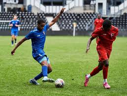
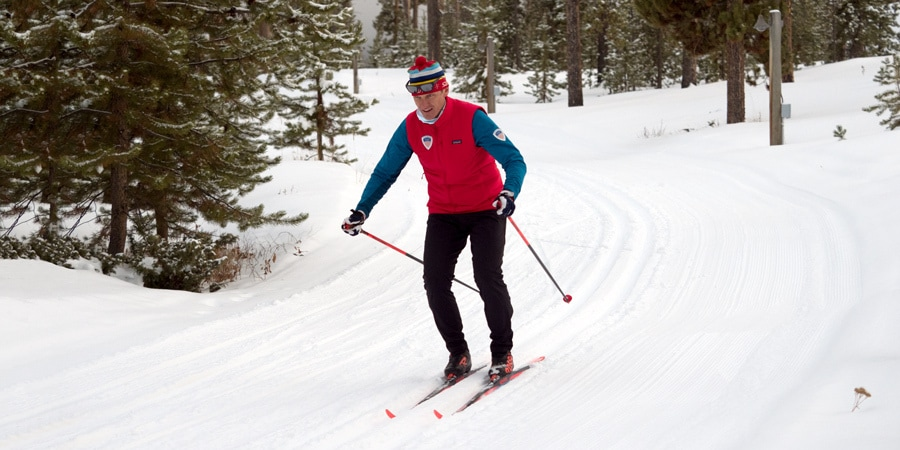
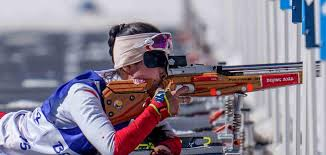
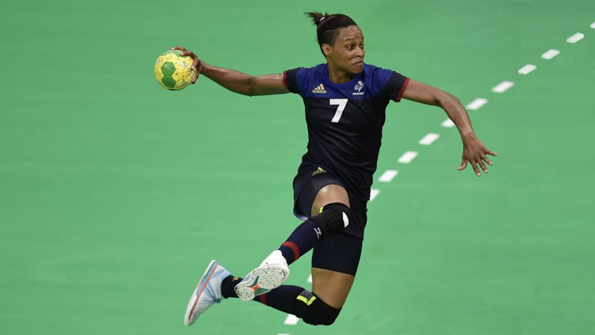
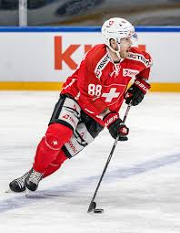

Home |
Gastronomy |
Sports |
Famous People |
Famous Landmarks |
Form |
Norway |
Noruega Sports |
Most popular sports in Noruega |
| Sports |
Basic rules |
Health benefits |
Required equipment |
Duration and gameplay |
Foto |
| Fútbol |
Football is played between two teams of eleven players each. The main goal is to score by getting the ball into the opponent’s goal without using hands or arms, except for the goalkeeper. Players must follow rules such as not pushing, tripping, or handling the ball. The team with the most goals at the end of the match wins. |
Playing football improves overall fitness and health. It helps strengthen the heart, increase stamina, build muscle, and improve coordination and balance. Football also supports mental health by reducing stress and encouraging teamwork and social interaction. |
The basic equipment needed to play football includes a ball, a flat playing field, and two goals. Players usually wear a team jersey, shorts, socks, shin guards, and football boots. Goalkeepers also wear gloves for protection and better grip |
A standard football match lasts 90 minutes, divided into two halves of 45 minutes each, with a short break in between. The game is continuous, with the ball moving between players through passing, dribbling, and shooting. The referee controls the match and enforces the rules. |
 |
| Cross-country skiing |
Cross-country skiing is a sport where athletes travel over snow-covered terrain using skis and poles. The goal is to complete a course in the shortest time or to finish ahead of other competitors. Skiers must follow marked tracks or lanes, use approved techniques (classic or freestyle), and respect rules about overtaking and course boundaries. |
Cross-country skiing is one of the best full-body workouts. It improves cardiovascular endurance, strengthens the legs, arms, and core, and increases balance and coordination. Because it is low-impact, it is gentle on the joints while still burning a high number of calories. |
The required equipment includes cross-country skis, ski poles, and ski boots designed for the chosen technique. Skiers also wear warm, breathable clothing, gloves, and a hat. Wax or grip systems are used on the skis to improve movement and control on snow. |
The duration of a cross-country skiing event varies depending on the race type and distance. Races can last from a few minutes in sprint events to over an hour in long-distance races. Athletes maintain a steady rhythm while skiing uphill, downhill, and on flat terrain, adjusting speed and technique throughout the course. |
 |
| Biathlon |
Biathlon combines cross-country skiing with rifle shooting. Athletes ski around a course and stop at shooting ranges at set points. They must hit a series of targets while shooting from prone and standing positions. Missed shots result in penalties, such as extra skiing loops or added time. |
Biathlon requires both physical endurance and mental focus. It improves cardiovascular fitness, muscle strength, and balance through skiing, while shooting develops concentration and breath control. The sport also helps athletes manage stress and stay calm under pressure. |
Biathlon equipment includes cross-country skis, poles, ski boots, and a small-caliber rifle carried on the athlete’s back. Skiers wear tight, insulated clothing suitable for cold weather. Safety equipment and properly maintained rifles are essential. |
Biathlon races vary in length depending on the event type, such as sprint, pursuit, or individual races. Competitions can last from about 20 minutes to over an hour. Athletes alternate between fast skiing sections and shooting rounds, making strategy and pacing very important. |
 |
| Handball |
Handball is played by two teams of seven players, including a goalkeeper. The objective is to score goals by throwing the ball into the opponent’s net. Players can pass, catch, and dribble the ball, but they may only take three steps without dribbling. Physical contact is allowed, but dangerous play is not. |
Handball is a fast-paced sport that improves strength, speed, and endurance. It develops upper-body power through throwing and lower-body strength through running and jumping. The sport also enhances coordination, reflexes, and teamwork, benefiting both physical and mental health. |
The main equipment needed is a handball and an indoor court with goals. Players wear jerseys, shorts, indoor sports shoes, and sometimes knee or elbow protection. Goalkeepers wear padded clothing for safety. |
A standard handball match lasts 60 minutes, divided into two halves of 30 minutes each. The game is very dynamic, with quick attacks, fast breaks, and frequent scoring. Referees control the match and enforce the rules throughout the game. |
 |
| Ice hockey |
Ice hockey is played between two teams of six players, including a goalkeeper (goaltender). The objective is to score by hitting a puck into the opponent’s goal using a stick. Players skate on ice and may pass or shoot the puck, but high sticks, tripping, and illegal body checks are not allowed. |
Ice hockey is a very demanding sport that improves cardiovascular fitness, strength, and agility. It builds strong leg muscles through skating and upper-body strength through stick handling and checking. The fast pace also improves reflexes, balance, and teamwork. |
Players need ice skates, a hockey stick, and a puck. Protective equipment is essential and includes a helmet, gloves, shoulder pads, elbow pads, shin guards, and padded shorts. Goalkeepers wear extra protective gear, including leg pads and a mask. |
An ice hockey game consists of three periods of 20 minutes each, with breaks in between. The game is fast-paced, with frequent substitutions and continuous action. Players focus on speed, strategy, and teamwork to control the puck and score goals. |
 |